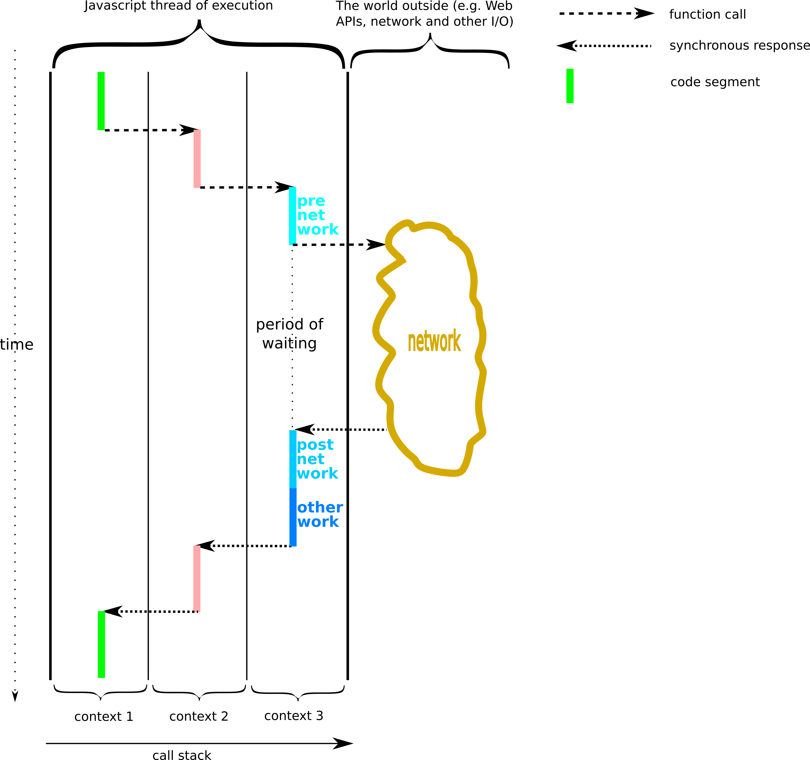
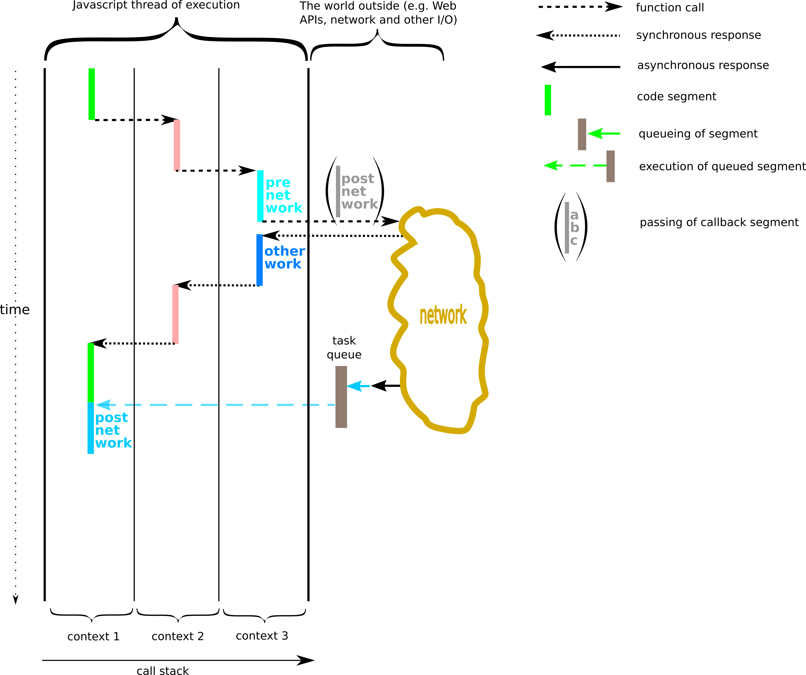
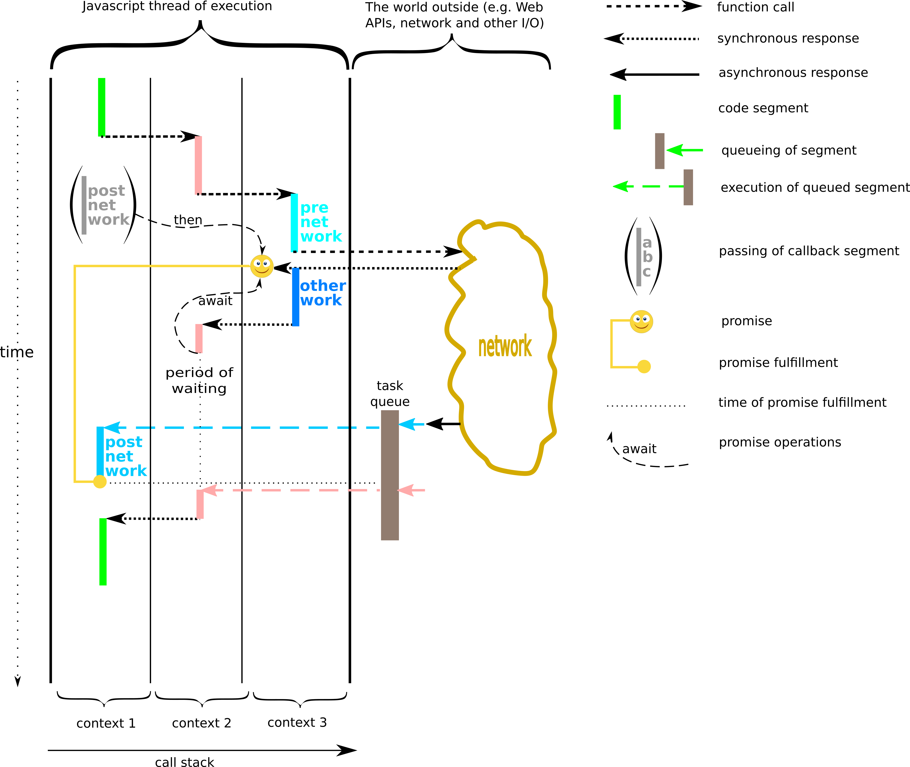

Network Programming (PowerPoint file)
-
Synchronous programming
Synchronous programming
Fully synchronous program execution - In the picture above, the function in context 1 calls function in context 2, which in turn calls function in context 3.
- The function in context 3 makes a network call (but this could be anything that takes time outside of the Javascript thread of execution).
- A synchronous call involves waiting for the called function to return (like what the function in context 3 does).
- Synchronous programming would not be a problem if all functions called did not take long to return.
- However, if the thread of execution is blocked, this can have a serious impact on user experience, since nothing can happen on the page during the wait: parts of the page may not be rendered and user input is not handled.
-
Asynchronous programming with callbacks
Asynchronous programming with callbacks
Execution of a program with an asynchronous call and the use of a callback - In the picture above, the call to the network is asynchronous and returns immediately.
- The asynchronous call takes a callback function as an argument.
- When the work requested by the network call is completed and an asynchronous response comes in (black left-directed arrow), the callback code is queued for execution and executes once the thread of execution is free.
- This pattern allows the thread of execution to be utilised while long-lasting external work is taking place.
- There are cases where 'internal' work needs to be treated in the same way. For example, code that is computationally expensive can be sent to the back of the queue if it does not involve immediate interaction with the user (also see multithreading).
- This article on MDN gives details on how to program using callbacks.
-
Asynchronous programming with promises
Asynchronous programming with promises
Execution of a program with an asynchronous call and the use of a promise - The picture above shows a case of using an asynchronous call that returns a promise.
- An object called a promise is returned from the asynchronous call.
- The callback in this case is still used but rather than passed into the asynchronous call, it is attached to the promise (with the then method).
- The await operator allows parts of the program to be syncrhonised with the completion of the asynchronous call.
- Both then and await can be used by any code that has a reference to the promise. This need not be the code that makes the asynchronous call.
- Also, asynchronous calls can easily be chained using the then method (not shown in the picture).
- These features of the promise mechanism offer more flexibility and ease of use to the programmer than conventional callbacks, especially in cases where many asynchronous operations depend on each other.
- This article on MDN gives details on how to program with promises.
-
Multithreading
Multithreading
- Multithreading is implemented by the Javascript Web Workers API.
- We will not be using this API in the module, but it is good to be aware of its existence.